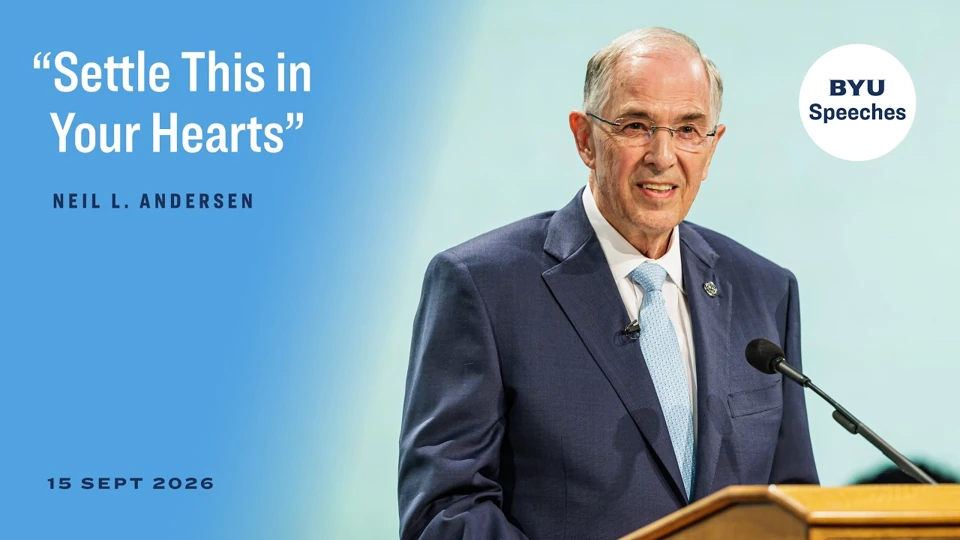
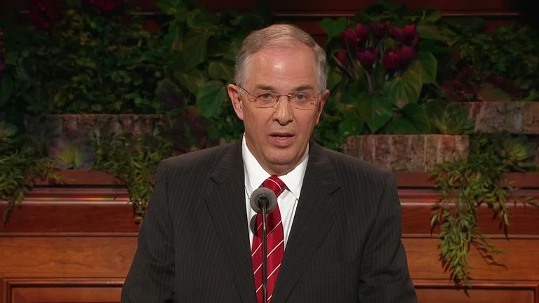
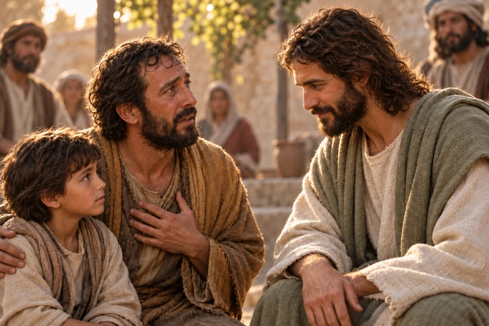
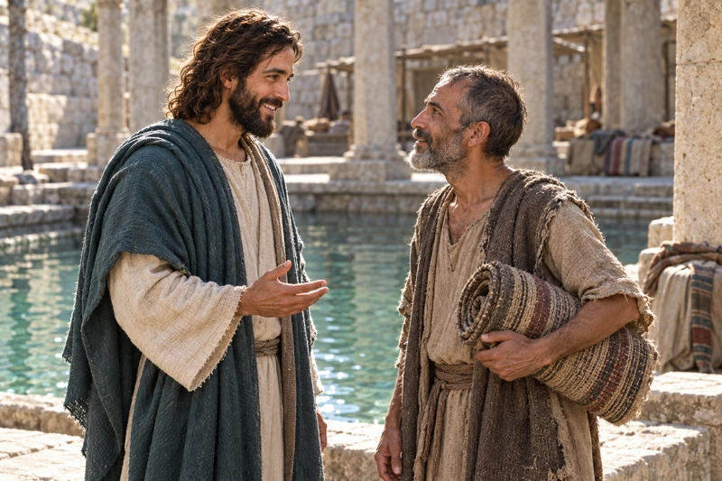
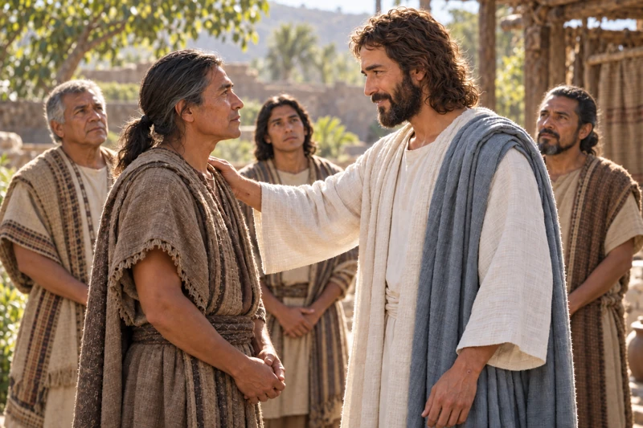
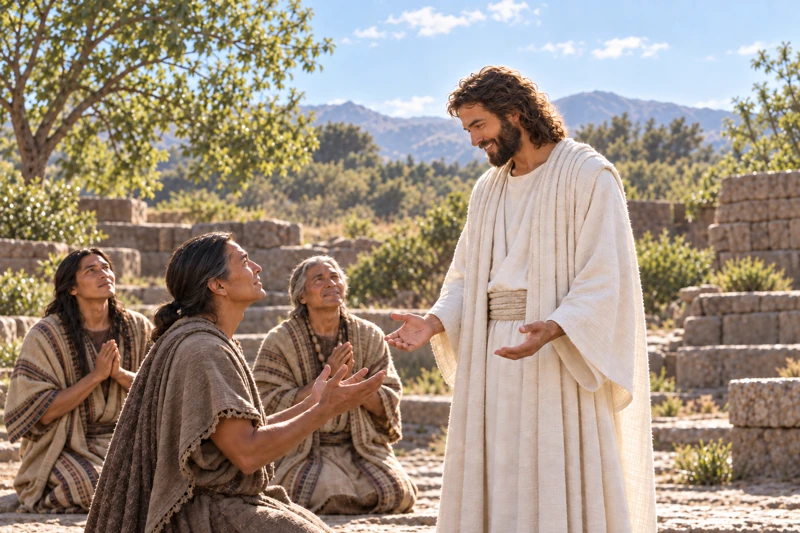
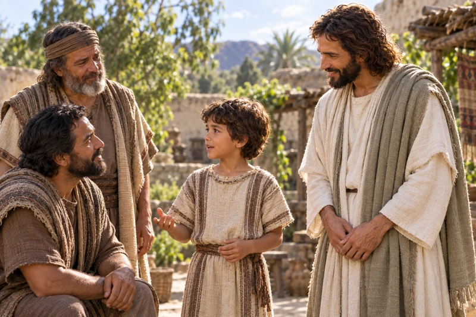
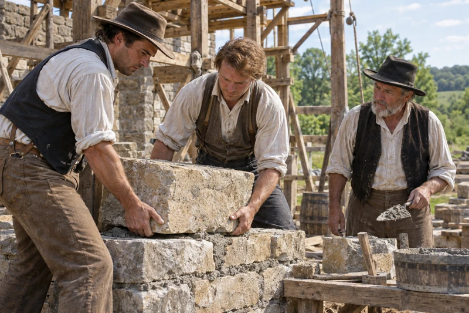
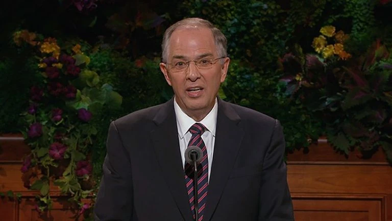
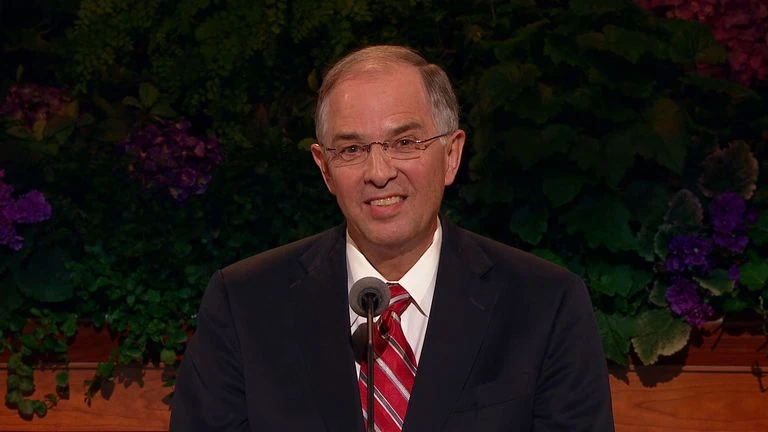

Come and see
Jesus welcomes two disciples who want to know Him. Follow their invitation to come and see.
Open this illustrated study →Give your heart to Jesus Christ, and keep learning to follow Him. Begin with Elder Neil L. Andersen’s September 15, 2026 BYU devotional, then explore scripture, related messages, and faithful choices in everyday life.
Settling your heart on Christ is a deliberate commitment to follow Him. It can coexist with questions that need patient study. Elder Andersen’s devotional invites listeners to turn their thoughts more often toward the Savior and to embrace the Book of Mormon more fully.
“To settle this in your heart is to courageously choose the road of discipleship, with a determination to never turn away.”
Come and see
Jesus welcomes two disciples who want to know Him. Follow their invitation to come and see.
Open this illustrated study →Elder Neil L. Andersen · Hear this in the recording · 8:34
Use the original message as your starting point. The scripture connections below are a focusChrist companion study across the Latter-day Saint canon; they do not imply that Elder Andersen used every pictured story. His excerpts and the recording transcript below are identified separately.

BYU devotional · September 15, 2026
Listen to Elder Andersen’s invitation to give your heart to Jesus Christ. Notice his invitations to think more about the Savior and to read the Book of Mormon again.
As you listen: What choice would help you respond to one of those invitations?
Official BYU recording

General conference · October 2015
Elder Andersen connects faith with deliberate choices, seeking God, and continuing to follow Christ. Read his counsel with your own questions and daily habits in mind.
As you listen: Which daily choice can nourish the faith you already have?
The devotional title draws on the Joseph Smith Translation of Luke 14. Read the discipleship passage and its translation notes alongside the address.
Read Luke 14:27–33 and its footnotes
What do I already trust about Jesus Christ? What question am I still studying? What faithful action can I take while that study continues? Keep all three answers in view.
Bring questions, notice His compassion, and respond to His invitation.

Jesus reaches toward a man who has asked for healing. Read His compassionate response.
Open this illustrated study →“Immerse yourself deeply into the divine mission, the perfect life, the life-changing teachings, the incomparable Atonement, and the breathtaking promises He offers you.”
Elder Neil L. Andersen · Hear this in the recording · 17:10

Explore and study · Mark 9:20–27
Christ bends toward a boy with the boy’s father beside them. His attention rests on the child, and the father brings an honest appeal.
The father does not pretend to possess an untroubled certainty. He asks for help with both his child’s suffering and his own belief. Jesus takes the boy by the hand and lifts him. A settled heart can still speak honestly about what it needs.
Consider: What would it sound like to bring your real question to Christ, rather than the question you think you ought to have?
Explore and study · Luke 13:10–17
An older woman stands upright before Jesus in the synagogue. Their eyes meet, and the people around them watch.
Jesus notices a woman who has suffered for eighteen years, calls her forward, and frees her from her infirmity. He identifies her as a daughter of Abraham. Read beyond the healing to His answer when someone objects: His care gives a person’s dignity priority over the complaint.
Consider: Whose needs might you notice more carefully as you turn your thoughts toward the Savior?

Explore and study · John 5:5–9
A man holds his rolled bed near the pool of Bethesda and looks into Christ’s face. The conversation has led to a new beginning.
The man describes a difficulty he has not been able to overcome. Jesus then gives a specific invitation: rise, take up the bed, and walk. This account witnesses the Savior’s power; it does not promise that every present illness will end immediately. Consider the next faithful action you can take while continuing to seek His help.
Consider: What is one concrete response you can make to a teaching of Jesus this week?
Read commitment in its setting of grief, pressure, and an uncertain future.
“For many of us, this is not something that suddenly falls upon us. Rather, it comes as our faith in Christ and spiritual sensitivity grow step by step, while at the same time experiencing the distastefulness and emptiness of the world’s allure.”
Elder Neil L. Andersen · Hear this in the recording · 4:33
Explore and study · Ruth 1:14–18
Ruth rests her hand on Naomi’s arm beside the road. Both women carry loss into the conversation, and Ruth chooses to remain with her.
Ruth’s commitment includes a people, a place, and God. The journey ahead is still uncertain when she makes that choice. Read her words beside Naomi’s grief, then follow their arrival in Bethlehem. Faithfulness can begin with staying close to someone who needs you.
Consider: Which relationship calls for patient loyalty rather than a quick answer?
Explore and study · Daniel 3:16–18
Three men stand before the king and answer him together. Their expressions are serious; their decision comes before the rescue.
Shadrach, Meshach, and Abed-nego believe God can deliver them. They also state that their worship will not depend on receiving the outcome they desire. Their answer helps distinguish trust in God from an attempt to bargain with Him. Read the whole chapter without overlooking the risk at this moment.
Consider: Which commitment can you keep while the outcome of a difficult situation remains unknown?
Attend to Christ’s trust, His love for praying disciples, and His care for children.
“Second, embrace more completely the Book of Mormon. When was the last time you read the Book of Mormon from the first page until the last? Was it when you were on your mission? If so, it is time to read it again.”
Elder Neil L. Andersen · Hear this in the recording · 17:58

Explore and study · 3 Nephi 18:36–37
Christ rests a hand on an older disciple’s shoulder and meets his eyes. Other disciples attend to the exchange.
Before departing, Jesus touches His chosen disciples one by one and gives them power to give the Holy Ghost. This moment follows His teaching about the sacrament, prayer, and welcoming others. The gift leads into service. The picture’s precise placement of His hand is an artistic choice; the passage records His touch and the authority He gives.
Consider: How can a responsibility you have received become a more personal act of service?

Explore and study · 3 Nephi 19:24–26
Jesus looks warmly upon the praying disciples. Nephi’s face is lifted toward Him, and the others continue their prayer.
After praying to the Father, Jesus returns to His disciples. The record describes His smile and the light upon His countenance as they continue praying. Linger over His relationship with the Father and His love for these disciples. Settled faith is nourished through that relationship, not simply through determination alone.
Consider: What helps your prayers become an ongoing relationship rather than only a request in an emergency?

Explore and study · 3 Nephi 26:14
A child speaks to attentive adults while Jesus stands beside him, listening. The adults give the child their full attention.
Jesus ministers to the children and enables them to speak marvelous things to their fathers. The record does not give us those words to reproduce. It does invite us to notice that receiving truth requires humility, even from experienced adults. Read this moment with the surrounding account of Christ’s teaching and ministry.
Consider: Whom might you hear more carefully if you expected to learn rather than only to teach?
Begin with the Son’s willing love, then follow a young seeker from scripture into prayer. Elder Andersen’s counsel about the heart and mind offers a way to approach these companion passages with commitment and honest questions.
“To settle this in your heart does not mean you have to settle everything in your mind.”
Elder Neil L. Andersen · Hear this in the recording · 10:46
Explore and study · Moses 4:1–2
The Beloved Son stands with His hand over His heart, attentive to His Father. This devotional interpretation looks to His willing response before mortal life.
Moses records the Son’s acceptance of the Father’s will and His desire that the glory belong to the Father. Read the contrast in these verses carefully. Our study of settled faith begins with the Redeemer’s love and willingness, not with a claim that human resolve saves us. The unseen setting is an artistic interpretation of the premortal account.
Consider: What changes when you begin a difficult act of obedience by remembering the Savior’s willing love?
Explore and study · Joseph Smith—History 1:11–13
Young Joseph pauses over an open Bible. A passage has given him something to consider and a decision to make.
In his history, Joseph recalls repeatedly reflecting on James’s invitation to ask God for wisdom. He describes confusion before describing his determination to pray. His account gives an important place to reading, reflection, and a sincere question. Continue into the following verses to read his testimony of what happened when he went to pray.
Read Joseph Smith—History 1:11–13
Consider: Which passage deserves a second, slower reading before you decide what to do next?
The Restoration’s history includes both building together and calling upon God in suffering. As you read these accounts, remember the spiritual experiences that have helped you choose to follow Christ.
“The decision to permanently follow Jesus Christ is greatly bolstered by the impressions, promptings, and unforgettable spiritual moments you experience in your life.”
Elder Neil L. Andersen · Hear this in the recording · 5:24

Explore and study · Doctrine and Covenants 95:8–11
Workers guide a stone into place while another watches with a trowel in hand. The work requires their attention and cooperation.
The Lord’s instruction to build His house in Kirtland called for a real response from people with limited resources. The temple’s history includes labor, sacrifice, and shared effort. These unnamed workers are an illustration of that effort. Consider how a conviction becomes visible through patient work alongside other people.
Read Doctrine and Covenants 95:8–11
Consider: What useful task can you begin, even if you cannot yet see the whole result?
Explore and study · Doctrine and Covenants 121:1–9
Joseph sits in the confined jail interior and turns toward the window in prayer. His hands are clasped and his expression is earnest.
The prayer from Liberty Jail asks where God is amid the Saints’ suffering. The answer speaks peace and endurance into that suffering. Read both the plea and the reassurance. Faith did not make the imprisonment unreal or erase its pain. Joseph was confined with companions; this close view concentrates on his personal appeal.
Read Doctrine and Covenants 121:1–9
Consider: What pain do you need to name honestly in prayer, and what source of support can you receive today?
Let daily study and ordinary kindness give your commitment a place in everyday life.
“Pray more in His name. Read His words. Apply His teachings. Speak His name in reverence and conviction. Believe in His power to forgive and refine you.”
Elder Neil L. Andersen · Hear this in the recording · 17:25
Explore and study · Alma 37:6–7
Two women study an open scripture volume together. One points to a passage while the other pauses with a pencil and notebook.
A settled pattern can be small enough to repeat: read a passage, ask what it says, write a question, and return the next day. Alma’s teaching about small and simple means offers a useful companion to that practice. This present-day scene illustrates shared study; the women are not people from a recorded historical event.
Consider: What modest reading habit would you be willing to keep for the next seven days?
Explore and study · Matthew 25:35–40
Neighbors arrive with a meal and a bag of fruit. Their eyes meet at the doorway as the food changes hands.
Jesus connects care for people in need with service to Him. A settled heart can take the shape of a visit, a meal, a patient conversation, or reliable help. Let this moment prompt a practical response to His teaching. Choose a kindness that respects the other person’s needs and dignity.
Consider: Who could receive a specific act of care from you this week?
These messages return to related concerns: receiving a witness, protecting faith through hardship, and remembering spiritual strength. Read each in its own setting, then consider what it adds to your study.

General conference · October 2014
Elder Andersen bears testimony of Joseph Smith and invites personal spiritual confirmation. Pair his message with Joseph’s own account and careful attention to the history and sources.
As you listen: What do the original account and the speaker’s testimony each contribute to your study?

General conference · October 2012
Elder Andersen speaks about protecting and strengthening faith through trials. Follow his counsel into prayer, scripture, worship, and the support of other disciples.
As you listen: Which source of strength can you reach for in a present trial?
Official Church video and text
General conference · April 2020
Elder Andersen invites listeners to remember and preserve experiences of spiritual strength. Consider what you have received and how recording it could help you return to it.
As you listen: What experience of goodness, guidance, or peace do you want to remember?
Official Church video and text
For another Joseph Smith message, read the Church Newsroom report of Elder Andersen’s February 2025 Utah State University devotional. Continue with the Joseph Smith study for scripture, history, and further original sources.
Elder Andersen teaches that settling your heart does not require every question in your mind to be resolved. He also describes study and reason as part of spiritual learning. Write your question precisely. Separate the passage’s words, a speaker’s testimony, historical evidence, and your own interpretation. Use the linked original sources, speak with someone you trust, and bring the question to God. A sincere question deserves more than a hurried answer.
What helped you notice the Savior this week? Which passage will you return to? What remains unresolved? Record these honestly; a quiet experience does not need to become a dramatic story to be worth remembering.

A man pauses to pray before the day begins. Continue with an invitation to bring our concerns to the Father.
Open this illustrated study →The original devotional was delivered September 15, 2026. At the time this study was prepared, BYU offered the video and audio while its edited transcript was forthcoming. The reporting below provides additional context; the linked scriptures are the source for each pictured account.
This unofficial transcript was prepared from the September 15, 2026 recording. Punctuation and paragraph breaks have been added for reading; brackets mark wording that remains uncertain. BYU’s edited text is the authoritative written version when available. Time links play the original audio at the corresponding passage.
0:00 — It's a special privilege for me to address you, you’re intelligent, believing, and courageous in your devotion to the Savior Jesus Christ and His restored gospel. You are here at Brigham Young University to learn and grow, both in your mind and in your spirit. I pray that my message today will be meaningful to the spiritual progress you are seeking.
0:28 — Here is our word for today, settle. You want to say it with me? One, two, three, settle. Very, very strong. Thank you. Depending how you use the word, there are multiple definitions.
0:47 — For our discussion today, I would propose this definition of the verb to settle, to resolve definitively and conclusively, to calm or bring to rest, to make stable and permanent.
1:03 — Here are three statements that will remind you how the word might be used. I'm settled on what my major should be. If Elder Andersen will hurry, I will settle my growing hunger pains in the Cougareat. Or, after that date last night, I am totally unsettled.
1:25 — In March of 1831, as recorded in Doctrine and Covenants section 45, Joseph Smith was instructed by the Lord to translate the New Testament. Throughout the next year, using the King James Version, the Prophet Joseph made inspired modifications and additions to the New Testament.
1:49 — Let's look at two verses in the King James Bible, Luke 14:27, and whosoever doth not bear his cross and come after me cannot be my disciple. And then the following verse, in verse 28, for which of you, intending to build a tower, sitteth not down first, and counteth the cost, whether ye have sufficient to finish it.
2:24 — We love these two scriptures. The Prophet Joseph was inspired to add a verse between these two verses. This verse is our subject today. Wherefore, settle this in your hearts that ye will do the things which I shall teach and command you. Settle this in your heart.
2:51 — Remember our definition to resolve definitively and conclusively, to calm or bring to rest, to make stable and permanent.
3:03 — As Latter-day Saints, what does it mean to have your faith in Jesus Christ and your devotion to the restored gospel settled in your heart? For me, it means that we have spiritually weighed the blessings and sacrifices of following Jesus Christ and exercising your precious will and agency. You have determined, you have chosen in your mind and in your spirit, that this will absolutely be the path your life will take. You are going forward, no longer doubting your decision.
3:44 — As a Latter-day Saint, you have received a witness of the Prophet Joseph Smith, the book of Mormon, and that today the Lord's hand and the priesthood of God are within the Church of Jesus Christ of Latter-day Saints. You have embraced with complete confidence the covenants of the Lord's house. You have resolved that as the Savior said, ye will do the things which I shall teach and command you.
4:13 — I know that a large number of you here today have already settled your faith in Jesus Christ, your desire to truly be His disciple, and your determination to stay true to the covenants and priesthood power of the restored gospel.
4:33 — For many of us, this is not something that suddenly falls upon us. Rather, it comes as our faith in Christ and spiritual sensitivity grow step by step while at the same time experiencing the distastefulness and emptiness of the world's allure.
4:56 — My own determination to settle this in my heart increased significantly while I was a student here at BYU, believe it or not, 53 years ago. For you who are continuing the process of settling definitively and conclusively your commitment to your faith, let's discuss how to receive the divine direction and make the important choices you seek.
5:24 — The decision to permanently follow Jesus Christ is greatly bolstered by the impressions, promptings, and unforgettable spiritual moments you experience in your life. Many here have served missions, and like my mission to France, a mission builds a foundation for the settling to find place.
5:48 — You have felt and now feel the Holy Ghost working in your life. You have felt the Lord's influence as you have prayed and opened the Scriptures. You have felt the joy of forgetting yourself and thinking more of others. Do you now desire to increase these spiritual feelings and to feel them with greater power? There is great opportunity here at BYU to strengthen these experiences.
6:22 — Even with the spiritual influences you have experienced, the decision to settle your resolve to follow Jesus Christ and keep the covenants of the restored gospel is a most sobering consideration. It is a compelling decision of choice that thoughtfully awaits an answer from each developing disciple.
6:50 — You live in a world of information and misinformation, and now artificial information overload. With overflowing options and choices, with hundreds of entertainment channels, an unending source of social media, boundless podcasts, and an unending profusion of published opinions, you live in a world of commotion and unsurprising confusion. With the array of influences bombarding your lives, the adversary is replete with his deceptive tactics.
7:30 — You will remember President Dallin H. Oaks' warning last February. One of the many reasons you will need the constant influence of the Holy Ghost is that you live in a season in which the adversary has become so effective at disguising truth that if you don't have the Holy Ghost, you will be deceived. Many obstacles lie ahead.
7:58 — The distractions will be many. To make your faith in the Savior central to all your important motivations and decisions requires an unusual clarity of purpose, a humility, and a firmness of mind.
8:18 — Elder Neal A. Maxwell said, without real faith and its attendant submissiveness, people sooner or later will find one thing or another to stumble over.
8:34 — To settle this in your heart is to courageously choose the road of discipleship with a determination to never turn away.
8:44 — As a young man, I first discovered Robert Frost’s poem, The Road Not Taken. You know these words.
8:54 — Two roads diverged in a yellow wood and sorry I could not travel both and be one traveler. Long I stood and looked down one as far as I could to where it bent in the undergrowth. Then took the other as just as fair and having perhaps a better claim because it was grassy and wanted wear. Two roads diverged in a yellow wood and I took the one less traveled by and that has made all the difference.
9:25 — In your world of complexity, Robert Frost might rewrite his poem, 100 roads diverged in a yellow wood and sorry I could not travel them all. Long I stood. With so many choices and alluring paths before you, it will require strength of heart and mind to boldly, without distraction or deception, settle this in your heart and walk the road less traveled toward the Savior.
10:03 — The Prophet Jacob said, Come unto the Lord, the Holy One. Remember that his paths are righteous. Behold, the way for man is narrow, but it lieth in a straight course before him and the keeper of the gate is the Holy One of Israel.
10:24 — Confidently preparing to settle this in your heart is a work of both the mind and the heart. The Lord has said, I will tell you in your mind and in your heart by the Holy Ghost which shall come upon you and which shall dwell in your heart.
10:43 — Here is an important principle. To settle this in your heart does not mean you have to settle everything in your mind. To settle this in your heart does not mean you have to settle everything in your mind.
11:03 — In 1991 when I was serving as a mission president in France, yes that's me, President Oaks looks the same, I look 40 years younger.
11:18 — President Oaks then Elder Oaks visited the mission. He shared with me a book he had recently written, The Lord's Way. Let me share with you a very valuable lesson I learned from chapter two entitled, Reason and Revelation.
11:37 — I quote, reason and revelation are methods of learning that are available to seekers of every type of knowledge. This is President Oaks speaking. Then he quotes President Boyd K. Packer as saying, each of us must accommodate the mixture of reason and revelation in our lives. The gospel not only permits but requires it.
12:04 — President Oaks then explains the sequential nature of spiritual learning. Study and reason come first, he said. Revelation comes second, reason can authenticate revelation and inspiration by measuring them against the threshold tests of edification, position and consistency with gospel principles.
12:32 — But reason has no role in evaluating the content of revelation in order to accept or reject it according to some supposed standard of reasonableness. Revelation has the final word. Reason screens revelation and revelation confirms or overrules reason.
12:57 — Reason has the first word, revelation has the last word. I really like that couplet. Reason has the first word, revelation has the last word.
13:14 — This principle helped me realize that all our questions need not be answered to settle this in our hearts. There will always be questions we cannot fully answer. For example, how did the vastness of the universe play into God's creation of our world? How do we explain black death disease in the Middle Ages, the Spanish flu, or even our own coronavirus disease?
13:44 — Reason alone will not fully explain the events of the church in the 19th century, the methods of translation or policies that seem foreign to us now. If we are not wise to the workings of the spirit, there is an internet full of questions that can bring doubt and fear and become obstacles to settling this in our heart.
14:11 — We live in a time of great commotion. We need the peace and comforting assurance that our course in life is anchored and steady. Allow the questions that do not yet have answers to rest patiently in a box labeled answers forthcoming. Trust the clear and powerful feelings of your heart.
14:33 — Remember the Apostle Paul’s declaration of faith. Faith is the substance of things hoped for, the evidence of things not seen. Substance, evidence, the spiritual movement inside of us is real and discernible. Reason has the first word, but revelation has the last word.
15:03 — What is it that you are to settle in your heart? The Scripture reads, settle this in your hearts that you will do the things which I shall teach and command you.
15:18 — Here are ten truths that the Lord Jesus Christ or His prophets have taught us that will settle in our hearts as we solidify our faith in Jesus Christ. I give you ten, but there are certainly many more.
15:36 — One, God is our Father and we are His children. Two, He hears our prayers. We need His answers. We are on earth for an important purpose. Jesus Christ is the only begotten Son of God. Keeping His teachings brings happiness [wording unclear] mortal life and promises [wording unclear] eternal life. His suffering and resurrection allow us to be forgiven and to live beyond the grave. He restored His gospel and priesthood through the Prophet Joseph Smith. His sacred word in the Bible and the Book of Mormon guide us. Receiving His ordinances and observing our covenants is our path to return home. And number ten, the gift of the Holy Ghost is needed in our every moment.
16:35 — Of course, we are not only to believe these things, our lives are to embrace the actions that follow. King Benjamin counseled, if you believe all these things, see that ye do them.
16:51 — Let me share two powerful ways to receive the spiritual strength to settle this in your heart. First, think more about the Savior. Do you remember the Scripture? Look unto me in every thought, doubt not, fear not. Immerse yourself deeply into the divine mission, the perfect life, the life-changing teachings, the incomparable atonement, and the breathtaking promises He offers you.
17:25 — Pray more in His name, read His words, apply His teachings, speak His name in reverence and conviction, believe in His power to forgive and refine you. The more you put Him into each of your days, the more you will know He is your Savior and Redeemer. Settling this in your heart will be the natural consequence of your renewed confidence in Him.
17:58 — Second, embrace more completely the Book of Mormon. When was the last time you read the Book of Mormon from the first page until the last? Was it when you were on your mission? If so, it is time to read it again. Remember the Prophet Joseph Smith declared, this book will bring you nearer to God by abiding by its precepts than any other book.
18:25 — In my many years of experience, I have come to see that all, yes, all, those who have settled the truthfulness of the restored gospel in their hearts, have an abiding conviction that the Book of Mormon came through the Prophet Joseph Smith by the gift and power of God.
18:46 — There are literally millions of stories of how the Book of Mormon has changed someone's life. Here is one I love. Robert E. Sackley, who later served as a general authority, was severely wounded as an elite Australian commando in World War II. While hospitalized in Australia, he was given a copy of the Book of Mormon. He attributed an important part of his conversion to the restored gospel, to a passage from the Book of Mormon he memorized while recovering there in the hospital. Here is the verse that you will recognize. Think of the beauty of writing this amazing verse of King Benjamin.
19:36 — For the natural man is an enemy to God, and has been from the fall of Adam, and will be forever and ever, unless he or she yields to the enticings of the Holy Spirit. Putteth off the natural man, and becometh a saint through the Atonement of Christ the Lord, and becometh as a child, submissive, meek, humble, patient, full of love, willing to submit to all things which the Lord seeth fit to inflict upon him, even as a child doth submit to his Father.
20:15 — That one scripture opened his heart to this sacred book, and it transformed his life. The Book of Mormon has transformed my life, it has transformed many of your lives.
20:30 — I promise you that the Book of Mormon has the power should you desire to solidify your faith in Jesus Christ and your personal commitment to the restored gospel. It is absolutely true and sacred scripture. I now turn to the part of my message that I am most eager to share.
20:54 — What happens once we have settled this in our hearts? How does this amazing choice and decision lift us, enrich us, and help us to be who we want to be? Many here could speak to this question. Thank you for allowing me to speak for all of us.
21:16 — As we settle this in our hearts, we absolutely trust our Heavenly Father and His Son, Jesus Christ. We use the gift of choice, our precious agency, a gift whose value is next to life itself, to say to our Father, I am yours, totally, completely, without reservation or condition. I will follow thy Son, not only because thou hast asked me to follow Him, but because I want to. I want to be His true disciple. My desire is complete. I will, of my own volition, love thee, my Father, and thy Son before all else. I will keep thy commandments and turn my talents to helping others, my brothers and sisters, and to strengthening thy kingdom on earth.
22:21 — This is the spirit of consecration. [And/when] a heart willingly and completely on its own without compulsion turns the key of consecration. The door of real freedom and spiritual power is opened.
22:38 — We are given a heavenly conferral, a greater vision of our purpose here on earth, a sustained ability to feel and to know, and an added abundance of spiritual gifts.
22:52 — Temptations that once seemed enticing lose their glamour as they are seen for what they are, the mocking voices from those in the great and spacious building fade away. The many distractions and deceptions of the adversary are more quickly spotted and dismissed.
23:14 — Our focus becomes what is good. What brings happiness to others? And what is more lasting and righteously satisfying?
23:24 — We continue and continue to freely nourish the spiritual direction we have chosen. It is increasingly gratifying and becomes very natural. An even more profound witness of the Savior follows.
23:46 — My personal journey to settle this in my heart has been eternally strengthened and extended by my angel wife Kathy. When I met her here at BYU in 1974, her settled heart was more developed than mine. We have walked the road of discipleship together, and her example and love of the Savior has been a light to my own journey.
24:15 — Now as I address you in the later years of my life and as a special witness of the Lord Jesus Christ, I declare with the sureness and knowledge that He who we worship and adore, Jesus Christ is the light and life of the world. He lives. He is the central being of all human history. He is our Savior and Redeemer. I love Him and I thank Him for the confirmation I have been given.
24:51 — As you begin this most important school year, I bless you as you deeply desire to settle this in your heart, your faith in Jesus Christ, and your personal commitment to your heavenly Father and His Beloved Son, and to the restored gospel will guide and direct you. I bless you that your spiritual understanding will flourish, your spiritual gifts will multiply, and your life will be filled with greater purpose and happiness.
25:24 — I express my love for each and all of you, and I leave you my blessing in the name of Jesus Christ, amen.
The original artwork is a devotional interpretation. Scripture supplies the accounts; faces, clothing, settings, and the precise arrangement of people are artistic choices. Contemporary scenes illustrate daily discipleship.
“He lives. He is the central being of all human history. He is our Savior and Redeemer.”
He eats before them
The risen Savior eats before His disciples. Continue with their witness of His bodily Resurrection.
Open this illustrated study →Elder Neil L. Andersen · Hear this in the recording · 24:34
Elder Andersen’s first invitation is to think more about the Savior. Choose one account from this study; return to it tomorrow, pray in His name, and put one teaching into practice.
Elder Andersen invites you to embrace the Book of Mormon more completely and read it again from beginning to end. Choose a regular time, notice its witness of Jesus Christ, and act on what you learn.
Continue through His Atonement, read the scriptures that witness of Him, or follow a question into another connected study.